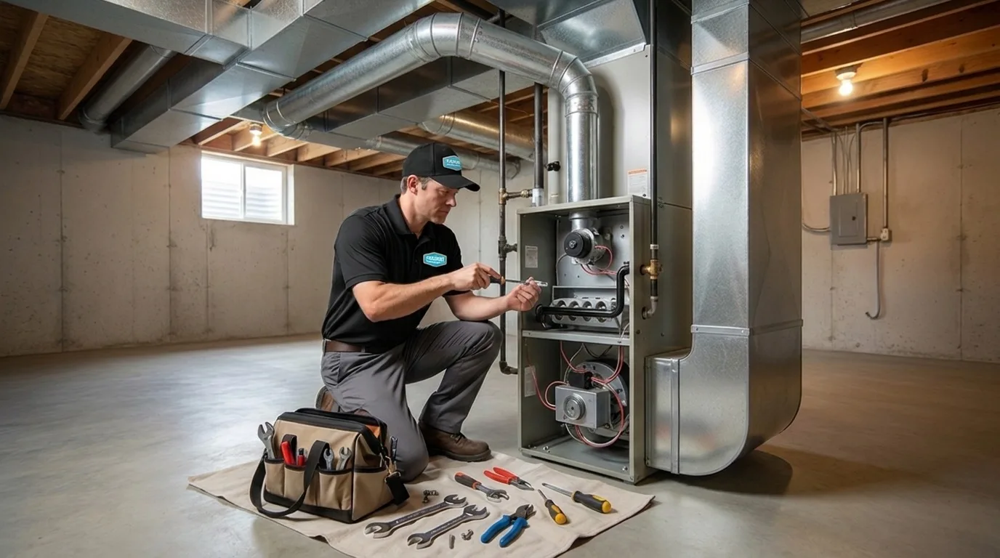

385.853.8116

Same-Day Response. Upfront pricing. Certified technicians.

Heavy winter snowfall, air pressure fluctuations, and extreme cold can create problems for the furnace in your Millcreek home. If you’re facing a furnace issue, count on the experienced team at Sunny Home Services for trusted heating and furnace repair in Millcreek, UT. Our highly skilled, local HVAC technicians are very familiar with how the weather here in Utah impacts home heating systems. That’s why we’re able to provide our customers with exceptional furnace repair services, new installations, routine maintenance, and more.
After hitting the slopes at Millcreek Canyon, you expect to come home to a warm, comfortable space. If you notice that your furnace isn’t working as it should, Sunny Home Services is available for expert furnace repair that’ll get your heat back up and running in a flash. The cost to repair your furnace in Millcreek will vary depending on the severity of the issue, parts availability, and whether you need urgent emergency after-hours repairs.

Whether you’re building a brand-new home in Millcreek, UT, or you need to upgrade an older furnace, we’re the best choice for professional furnace replacement and new installations. Our team installs gas and electric furnaces, new heat pumps, and compact, energy-saving ductless mini-split systems for heating and cooling in a single unit.
Get reliable heating and incredible energy savings with a brand-new furnace from Sunny Home Services. Today’s modern furnaces have high AFUE ratings and updated features like variable-speed motors that reduce energy use without sacrificing performance. Our skilled HVAC technicians will arrive at your home with a fully stocked truck, ready to install your new furnace, and most jobs take just one day or less to complete.
Enjoy heating and cooling in one piece of equipment with a new heat pump from Sunny Home Services. These home comfort systems provide consistent heating that tackles even the coldest Utah winter weather. Our heating company near you installs high-quality heat pumps for new construction homes and older Millcreek properties that need an energy-saving upgrade.
Selecting the right size heating system for your home is vital to reap the benefits of reliable heating and lower energy costs. We take several factors into account when helping you select the appropriately sized system before heating installation near Millcreek, UT, begins.

Determining whether you should repair or replace your heating system can feel like an overwhelming decision. Sunny Home Services helps you decide which option is right for you, based on several factors:
Routine heating maintenance is vital to ensure optimum, reliable performance when our cold winter season arrives. We recommend scheduling heating maintenance once a year in early fall, and twice per year if you have an aging system.
Here’s what’s included with a furnace tune-up from Sunny Home Services:
Just like scheduling Millcreek AC services before summer arrives is important, it’s also important to schedule heating maintenance before the cold Utah winter hits. Routine maintenance helps to keep indoor humidity levels comfortable and the heat in your home more consistent for a cozy winter season.
Our experienced HVAC techs see several common problems in Millcreek homes, like:
Here’s why you should choose us for your heating service needs in Millcreek:

If you live in Millcreek, UT, trust the pros at Sunny Home Services for all your heating needs. From repairs and new installations to routine maintenance, contact us to schedule service today!